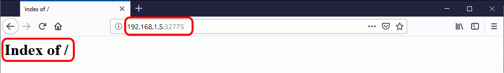
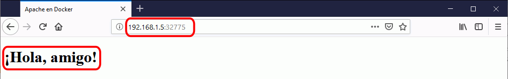
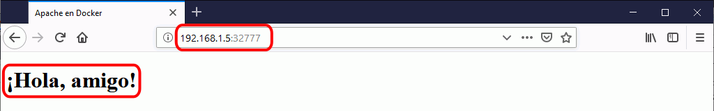
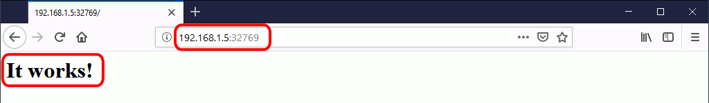
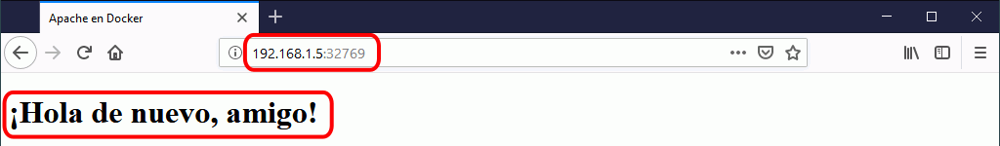
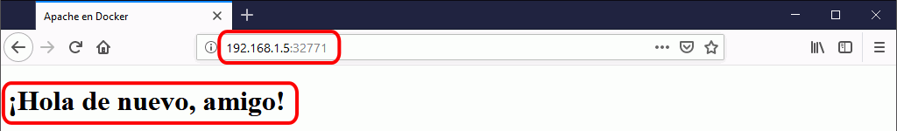

Esta lección es una introducción a la instalación de aplicaciones mediante Docker, utilizando las imágenes proporcionadas por Bitnami. Los ejercicios están planteados como actividades guiadas, por lo que no se ofrece una página de soluciones.
Docker (1) 1 - Instalar Docker
En este ejercicio instalaremos Docker en una máquina virtual de Ubuntu 18.04.3 LTS Server ejecutada en VirtualBox.
Estas instrucciones se han extraído de la documentación oficial de Docker Install Docker on Ubuntu
Prepare la máquina virtual
Si ha realizado los ejercicios de Packer de estos apuntes, puede utilizar la máquina virtual creada en el ejercicio 1-3, importándola en VirtualBox como servicio virtualizado.
Descargue la imagen iso de la versión más reciente de Ubuntu 18.04 LTS Server de 64 bits. Actualmente (diciembre de 2019), la última versión disponible de Ubuntu LTS Server es Ubuntu 18.04.3 (publicada el 08/08/19).
Para descargar la imagen .iso de instalación de Ubuntu Server 18.04.3 LTS puede utilizar:
Este enlace directo de descarga desde ubuntu, que seguramente dejará de estar disponible cuando se publique una nueva versión: Ubuntu 18.04.3 Server (08/08/19, 900 MB).
Este enlace directo de descarga desde mclibre: Ubuntu 18.04.3 Server (08/08/19, 900 MB).
Cree una máquina virtual en VirtualBox e instale Ubuntu 18.04.3 LTS Server.
Para los ejercicios de esta página un disco duro virtual de 8 GB es suficiente, pero para poder instalar más aplicaciones se necesitaría un disco mayor, por ejemplo de 16 GB.
Compruebe que en la configuración de red de la máquina virtual está conectado a Adaptador puente. Si está conectado a otro tipo de adaptador (probablemente NAT), apague la máquina virtual, cambie a Adaptador puente y reinicie la máquina virtual.
Actualice la distribución
Arranque la máquina virtual y ejecute los comandos siguientes en un terminal:
Actualice la distribución:
sudo apt update
sudo apt full-upgrade
Instale utilidades
Instale las utilidades siguientes:
Instale el editor nano:
sudo apt install nano
Añada los repositorios de Docker
En la máquina virtual, ejecute los comandos siguientes en un terminal:
Compruebe que APT se conecta con el repositorio adecuado:
apt policy docker-ce
En la pantalla debe mostrarse el repositorio de la versión de Docker disponible para la versión de Ubuntu indicada (en el ejemplo se muestran la versión de Docker 18.09.1 y la versión de Ubuntu bionic, es decir, Ubuntu 18.04):
docker-ce:
Instalados: (ninguno)
Candidato: 5:19.03.5~3-0~ubuntu-bionic
Tabla de versión:
5:19.03.5~3-0~ubuntu-bionic 500
500 https://download.docker.com/linux/ubuntu bionic/stable amd64 Packages
...
Instale Docker
En la máquina virtual, ejecute los comandos siguientes en un terminal:
Actualice el administrador de paquetes:
sudo apt update
Instale la última versión de Docker
sudo apt install docker-ce
Arranque el servicio docker
sudo systemctl start docker
Compruebe que el servicio está activo:
systemctl status docker
Se mostrará un mensaje similar a este (pulse Ctrl+C para salir del texto):
• docker.service - Docker Application Container Engine
Loaded: loaded (/lib/systemd/system/docker.service; enabled; vendor preset: enabled)
Active: active (running) since ...
...
Docker (1) 2 - Imagen hello-world
Dos conceptos fundamentales de Docker son los contenedores y las imágenes.
Docker encapsula las aplicaciones en contenedores. Un contenedor es el equivalente a una máquina virtual de la virtualización clásica, pero mucho más ligera porque utiliza recursos del sistema operativo del host. Las aplicaciones de cada contenedor "ven" un sistema operativo, que puede ser diferente en cada contenedor, pero quien realiza el trabajo es el sistema operativo común que hay por debajo.
Docker crea los contenedores a partir de imágenes. Las imágenes son una especie de plantillas que contienen como mínimo todo el software que necesita la aplicación para ponerse en marcha. Las imágenes se pueden crear a partir de otras imágenes más básicas incluyendo software adicional en forma de capas. Todos los contenedores creados a partir de una imagen contienen el mismo software, aunque en el momento de su creación se pueden personalizar algunos detalles.
En la máquina virtual, ejecute los comandos siguientes en un terminal:
Compruebe que inicialmente no hay ningún contenedor creado (la opción -a hace que se muestren también los contenedores detenidos, sin ella se muestran sólo los contenedor que estén en marcha):
sudo docker ps -a
o también
sudo docker container ls -a
La respuesta, en forma de tabla, será la siguiente. La cabecera de la tabla ocupa dos líneas ya que es una tabla con muchos campos.
CONTAINER ID IMAGE COMMAND CREATED STATUS
PORTS NAMES
Compruebe que inicialmente tampoco disponemos de ninguna imagen:
sudo docker image ls
La respuesta, en forma de tabla, será la siguiente:
REPOSITORY TAG IMAGE ID CREATED SIZE
Docker crea los contenedores a partir de imágenes locales (ya descargadas), pero si al crear el contenedor no se dispone de la imagen local, Docker descarga la imagen de su repositorio.
La orden más simple para crear un contenedor es:
sudo docker run IMAGEN
Cree un contenedor con la aplicación de ejemplo hello-world. La imagen de este contenedor se llama hello-world:
sudo docker run hello-world
Como no tenemos todavía la imagen en nuestro ordenador, Docker descarga la imagen, crea el contenedor y lo pone en marcha. En este caso, la aplicación que contiene el contenedor hello-world simplemente escribe un mensaje de salida al arrancar e inmediatamente se detiene el contenedor. La respuesta será similar a esta:
Unable to find image 'hello-world:latest' locally
latest: Pulling from library/hello-world
1b930d010525: Pull complete
Digest: sha256:4fe721ccc2e8dc7362278a29dc660d833570ec2682f4e4194f4ee23e415e1064
Status: Download newer image from hello-wolrd:latest
Hello from Docker!
This message shows that your installation appears to be working correctly.
...
Si listamos ahora las imágenes existentes ...
sudo docker image ls
... se mostrará información de la imagen creada:
REPOSITORY TAG IMAGE ID CREATED SIZE
hello-world latest fce209e99eb9 4 weeks ago 1.84 kB
Si listamos ahora los contenedores existentes ...
sudo docker ps -a
... se mostrará información del contenedor creado:
CONTAINER ID IMAGE COMMAND CREATED STATUS
PORTS NAMES
614B4c431ffa hello-world "/hello" 2 minutes ago Exited (0) 2 minutes
ago hopeful_elbakyan
Cada contenedor tiene un identificador (ID) y un nombre distinto. Docker "bautiza" los contenedores con un nombre peculiar, compuesto de un adjetivo y un apellido.
Podemos crear tantos contenedores como queramos a partir de una imagen. Una vez la imagen está disponible localmente, Docker no necesita descargarla y el proceso de creación del contenedor es inmediato (aunque en el caso de hello-world la descarga es rápida, con imágenes más grandes la descarga inicial puede tardar un rato)
Normalmente se aconseja usar siempre la opción -d, que arranca el contenedor en segundo plano (detached) y permite seguir teniendo acceso a la shell (aunque con hello-world no es estrictamente necesario porque el contenedor hello-world se detiene automáticamente tras mostrar el mensaje).
Al crear el contenedor hello-world con la opción -d no se muestra el mensaje, simplemente muestra el identificador completo del contenedor.
sudo docker run -d hello-world
1ae54736196021523a2b21c123fd671253e62150daccd882374
Si listamos los contenedores existentes ...
sudo docker ps -a
... se mostrarán los dos contenedores:
CONTAINER ID IMAGE COMMAND CREATED STATUS
PORTS NAMES
1ae547361960 hello-world "/hello" 4 seconds ago Exited (0) 3 seconds
ago distracted_banach
614B4c431ffa hello-world "/hello" 5 minutes ago Exited (0) 5 minutes
ago hopeful_elbakyan
Los contenedores se pueden destruir mediante el comando rm, haciendo referencia a ellos mediante su nombre o su id. No es necesario indicar el id completo, basta con escribir los primeros carácteres (de manera que no haya ambigüedades). Borre los dos contenedores existentes:
... se mostrará el contenedor con el nombre que hemos indicado:
CONTAINER ID IMAGE COMMAND CREATED STATUS
PORTS NAMES
54e9827bd10a hello-world "/hello" 4 seconds ago Exited (0) 3 seconds
ago hola-1
Si intentamos crear un segundo contenedor con un nombre ya utilizado ...
sudo docker run -d --name=hola-1 hello-world
Docker nos avisará de que no es posible:
docker: Error response from daemon: Conflict. The container name "/hola-1" is already in use by con
tainer "54e9827bd10ab2825e1b3e4d3bf7a8cbdf778b472359c655d72d9c09e753500a". You have to remove (or re
name) that container to be able to reuse that name.
See 'docker run --help'.
Docker (1) 3 - Imagen apache
En este ejercicio vamos a crear un contenedor que incluya un servidor Apache en funcionamiento a partir de una imagen pública, modificar el contenido del contenedor y finalmente, crear una nueva imagen para crear contenedores personalizados.
Crear el contenedor Apache
Cree un contenedor que contenga un servidor Apache a partir de la imagen bitnami/apache
la opción -P hace que Docker asigne de forma aleatoria un puerto de la máquina virtual al puerto asignado a Apache en el contenedor. La imagen bitnami/apache asigna a Apache el puerto 8080 del contenedor para conexiones http y el puerto 8443 para conexiones https.
sudo docker run -d -P --name=apache-1 bitnami/apache
44c9e89bdfd24fa623774b3e774b0fb0efa107f752af5161b1d6b925330a82f6
Consulte el puerto del host utilizado por el contenedor ...
sudo docker ps -a
... se mostrará el contenedor con el nombre que hemos indicado:
CONTAINER ID IMAGE COMMAND CREATED STATUS
PORTS NAMES
44c9e89bdfd2 bitnami/apache "/app-entrypoint.sh …" About a minute ago Up About a min
ute 0.0.0.:32769->8080/tcp, 0.0.0.0:32768->8443/tcp apache-1
Abra en el navegador la página inicial del contenedor y compruebe que se muestra una página que dice "It works!".
Modificar la página inicial del contenedor Apache
En este apartado vamos a modificar la página web inicial de Apache del contenedor Docker.
Tenga en cuenta que modificar el contenido de un contenedor tal y como vamos a hacer en este apartado sólo es aconsejable en un entorno de desarrollo, pero no es aconsejable en un entorno de producción porque va en contra de la "filosofía" de Docker. Los contenedores de Docker están pensados como objetos de "usar y tirar", es decir, para ser creados, destruidos y creados de nuevo tantas veces como sea necesario y en la cantidad que sea necesaria. En el apartado siguiente realizaremos la misma tarea de una forma más conveniente, modificando no el contenedor sino la imagen a partir de la cual se crean los contenedores.
Cree un segundo contenedor que contenga un servidor Apache a partir de la imagen bitnami/apache
sudo docker run -d -P --name=apache-2 bitnami/apache
c5041d12aabdc6f58219fec176036eb352ecaea7cf81b8f7fa2ad8af801c96a2
Consulte el puerto del host utilizado por el contenedor ...
sudo docker ps -a
... se mostrarán los dos contenedores creados:
CONTAINER ID IMAGE COMMAND CREATED STATUS
PORTS NAMES
c5041d12aabd bitnami/apache "/app-entrypoint.sh …" About a minute ago Up About a min
ute 0.0.0.:32771->8080/tcp, 0.0.0.0:32770->8443/tcp apache-2
44c9e89bdfd2 bitnami/apache "/app-entrypoint.sh …" 5 minutes ago Up 5 min
utes 0.0.0.:32769->8080/tcp, 0.0.0.0:32768->8443/tcp apache-1
Cree la nueva página index.html ...
sudo nano index.html
... por ejemplo con el contenido siguiente
<h1>Hola, mundo!</h1>
... o mejor, una página válida HTML5 (para poder escribir caracteres no ingleses):
Abra en el navegador la página inicial del contenedor y compruebe que se ha modificado.
Crear una nueva imagen
Nota: Si queremos cambiar la página inicial, la forma correcta de hacerlo en Docker es crear una nueva imagen que incluya la página modificada, de manera que cada vez que se cree el contenedor, la página inicial sea la modificada.
Las imágenes se crean a partir de Dockerfiles, ficheros que describen los elementos que forman la imagen. Los Dockerfiles pueden ser muy extensos. En este caso, se trata de un Dockerfile mínimo.
Cree un directorio que contendrá el Dockerfile
sudo mkdir mi-apache
Copie el fichero index.html creado anteriormente
sudo mv index.html mi-apache
Entre en el directorio y cree un fichero Dockerfile
cd mi-apache
sudo nano Dockerfile
El contenido del Dockerfile puede ser el siguiente:
FROM bitnami/apache
COPY index.html /opt/bitnami/apache/htdocs/index.html
Genere la nueva imagen.
El último argumento (y el único imprescindible) es el nombre del archivo Dockerfile que tiene que utilizar para generar la imagen. Como en este caso se encuentra en el mismo directorio y tiene el nombre predeterminado Dockerfile, se puede escribir simplemente punto (.).
Para indicar el nombre de la imagen se debe añadir la opción -t. El nombre de la imagen debe seguir el patrón nombre-de-usuario/nombre-de-imagen. Si la imagen sólo se va a utilizar localmente, el nombre de usuario y de la imagen pueden ser cualquier palabra.
sudo docker build -t barto/mi-apache .
Cree un contenedor a partir de la nueva imagen:
sudo docker run -d -P --name=mi-apache-1 barto/mi-apache
Abra en el navegador la página inicial del contenedor y compruebe que se ha modificado.
Docker (1) 4 - Volúmenes
Docker simplifica enormemente la creación de contenedores, y eso lleva a tratar los contenedores como un elemento efímero, que se crea cuando se necesita y que no importa que se destruya puesto que puede ser reconstruido una y otra vez a partir de su imagen.
Pero si la aplicación o aplicaciones incluidas en el contenedor generan datos y esos datos se guardan en el propio contenedor, en el momento en que se destruyera el contenedor perderíamos esos datos. Para conseguir la persistencia de los datos, se pueden emplear dos técnicas:
Los directorios enlazados, en la que la información se guarda fuera de Docker, en la máquina host (en nuestro caso, en la máquina virtual de Ubuntu)
Los volúmenes, en la que la información se guarda mediante Docker, pero en unos elementos llamados volúmenes, independientes de las imágenes y los contenedores
Los volúmenes son la mejor solución cuando la información es generada por el propio contenedor y los directorios enlazados pueden ser más adecuados cuando la información no es generada por ningún contenedor.
Directorios enlazados (bind)
Docker permite asociar directorios del contenedor a directorios de la máquina host (en nuestro caso, de la máquina virtual de Ubuntu). Es decir, que cuando el contenedor lea o escriba en su directorio, donde leerá o escribirá será en el directorio de la máquina virtual.
Si el directorio enlazado es el directorio en el que la aplicación guarda los datos generados por la propia aplicación, de esta manera conseguimos que los datos estén realmente fuera del contenedor. Eso significa que podemos conservar los datos aunque se destruya el contenedor, reutilizarlos con otro contenedor, etc.
En este ejemplo, vamos a volver a aprovechar el hecho que la imagen bitnami/apache está configurada para que el directorio htdocs habitual (en el caso de bitnami como hemos visto en el ejercicio anterior es /opt/bitnami/apache/htdocs) enlace al directorio /app [véase Dockerfile de bitnami/apache]
Si al crear el contenedor enlazamos el directorio /app con un directorio de la máquina virtual, el contenedor servirá las páginas contenidas en el directorio de la máquina virtual.
En la máquina virtual, ejecute los comandos siguientes en un terminal:
Cree un directorio que contendrá las páginas web:
sudo mkdir /home/barto/web
Cree un contenedor Apache.
La opción --mount permite crear el enlace entre el directorio de la máquina virtual y el contenedor. La opción tiene tres argumentos separados por comas pero sin espacios: type=bind,source=ORIGEN-EN-MÁQUINA-VIRTUAL,target=DESTINO-EN-CONTENEDOR. Ambos directorios deben existir previamente.
sudo docker run -d -P --name=apache-bind-1 --mount type=bind,source=/home/barto/web,target=/app bitnami/apache
e3b0c44298fc1c149afbf4c8996fb92427ae41e4649b934ca495991b7852b855
Abra en el navegador la página inicial del contenedor y compruebe que se muestra el contenido de un directorio vacío.

Cree un fichero index.html:
sudo nano /home/barto/web/index.html
... por ejemplo con el contenido siguiente
<h1>Hola, amigo!</h1>
... o mejor, una página válida HTML5 (para poder escribir caracteres no ingleses):
Actualice el navegador y compruebe que se muestra la página recién creada.

Gracias a los directorios enlazados, podemos trabajar en la máquina virtual con los ficheros del directorio /web haya o no haya contenedores en marcha y al crear un contenedor, podremos acceder al contenido del directorio a través del servidor web del contenedor
Cree un nuevo contenedor que enlace al directorio /web:
sudo docker run -d -P --name=apache-bind-2 --mount type=bind,source=/home/barto/web,target=/app bitnami/apache
5fd924625f6ab16a19cc9807c7c506ae1813490e4ba675f843d5a10e0baacdb8
Abra en el navegador la página inicial del nuevo contenedor y compruebe que se muestra la página que está en la máquina virtual.

Nota: La imagen bitnami/apache incluye un directorio /app que enlaza a /opt/bitnami/apache/htdocs como puede comprobar entrando en el contenedor:
Entre en la shell del contenedor:
sudo docker exec -it apache-bind-1 /bin/bash
Liste los directorios en la raíz del contenedor:
ls -al /
Compruebe que el directorio /app enlaza al directorio /opt/bitnami/apache/htdocs:
total 112
drwxr-xr-x 1 root root 4096 Feb 6 22:37 .
drwxr-xr-x 1 root root 4096 Feb 6 22:37 ..
-rwxr-xr-x 1 root root 0 Feb 6 22:37 .dockerenv
drwxrwxr-x 1 root root 4096 Jan 30 10:50 .nami
-rw-rw-r-- 1 root root 118 Jan 30 10:50 apache-inputs.json
lrwxrwxrwx 1 root root 26 Jan 30 10:50 app -> /opt/bitnami/apache/htdocs
...
Volúmenes (volume)
En vez de guardar los datos persistentes en la máquina host, Docker dispone de unos elementos llamados volúmenes que podemos asociar también a directorios del contenedor, de manera que cuando el contenedor lea o escriba en su directorio, donde leerá o escribirá será en el volumen.
Los volúmenes son independientes de los contenedores, por lo que también podemos conservar los datos aunque se destruya el contenedor, reutilizarlos con otro contenedor, etc. La ventaja frente a los directorios enlazados es que pueden ser gestionados por Docker. Otro detalle importante es que el acceso al contenido de los volúmenes sólo se puede hacer a través de algún contenedor que utilice el volumen.
Vamos a repetir un ejemplo similar al ejemplo anterior, pero utilizando un volumen en vez de un directorio enlazado. En este caso, enlazaremos el directorio /app con un volumen de Docker. directorio de la máquina virtual, el contenedor servirá las páginas contenidas en el directorio de la máquina virtual.
En la máquina virtual, ejecute los comandos siguientes en un terminal:
Cree un contenedor Apache.
La opción --mount permite crear el volumen . La opción tiene tres argumentos separados por comas pero sin espacios: type=volume,source=NOMBRE-DEL-VOLUMEN,target=DESTINO-EN-CONTENEDOR. El directorio de destino debe existir previamente.
sudo docker run -d -P --name=apache-volume-1 --mount type=volume,source=vol-apache,target=/app bitnami/apache
3b1bcc5a67f38853810972b1da8a67148fad78c6cd6f22b2c823d141be59c81c
Compruebe que se ha creado el contenedor y consulte el puerto asignado:
sudo docker ps
CONTAINER ID IMAGE COMMAND CREATED STATUS
PORTS NAMES
3b1bcc5a67f3 bitnami/apache "/app-entrypoint.sh …" About a minute ago Up About a min
ute 0.0.0.:32769->8080/tcp, 0.0.0.0:32768->8443/tcp apache-volume-1
Abra en el navegador la página inicial del contenedor y compruebe que se muestra la página inicial habitual de esta imagen.

Compruebe que se ha creado un volumen con el nombre asignado al crear el contenedor:
sudo docker volume ls
DRIVER VOLUME NAME
local vol-apache
Los volúmenes son entidades independientes de los contenedores, pero para acceder al contenido del volumen hay que hacerlo a través contenedor, más exactamente a través del directorio indicado al crear el contenedor.
Entre en el contenedor y liste el directorio /app.
sudo docker exec -it apache-volume-1 /bin/bash
I have no name!@3b1bcc5a67f3:$ ls /app
index.html
El directorio /app contiene únicamente el fichero index.html. Pero tenga en cuenta que la página web index.html se encuentra en el volumen, no en el contenedor.
Modifique esa página web. Para ello, salga del contenedor`:
I have no name!@3b1bcc5a67f3:$ exit
... y cree un nuevo fichero index.html:
sudo nano index.html
Por ejemplo, con el siguiente contenido:
<h1>Hola de nuevo, amigo!</h1>
... o mejor, una página válida HTML5 (para poder escribir caracteres no ingleses):
Copie el fichero index.html en el directorio /app del contenedor (aunque realmente se copiará en el volumen):
sudo docker cp index.html apache-volume-1:app/
Actualice el navegador y compruebe que se muestra la página recién creada.

Cree ahora un nuevo contenedor que use el mismo volumen:
sudo docker run -d -P --name=apache-volume-2--mount type=volume,source=vol-apache,target=/app bitnami/apache
a6c8a30f7b1dc7a4ef165046daff226ee1d6a69573269ca24d57b5b4b6802881
Compruebe que se ha creado el contenedor y consulte el puerto asignado:
sudo docker ps
CONTAINER ID IMAGE COMMAND CREATED STATUS
PORTS NAMES
a6c8a30f7b1d bitnami/apache "/app-entrypoint.sh …" About a minute ago Up About a min
ute 0.0.0.:32771->8080/tcp, 0.0.0.0:32770->8443/tcp apache-volume-2
3b1bcc5a67f3 bitnami/apache "/app-entrypoint.sh …" 5 minutes ago Up 5 minutes
0.0.0.:32769->8080/tcp, 0.0.0.0:32768->8443/tcp apache-volume-1
Abra en el navegador la página inicial del nuevo contenedor y compruebe que este contenedor muestra también la página que ha copiado antes en el volumen.

Los volúmenes son independientes de los contenedores, pero Docker tiene en cuenta qué volúmenes están siendo utilizados por un contenedor.
Si intenta borrar el volumen del ejemplo anterior mientras los contenedores están en marcha, Docker muestra un mensaje de error que indica los contenedores afectados:
sudo docker volume rm vol-apache
Error response from daemon: remove vol-apache: volume is in use - [a6c8a30f7b1dc7a4ef165046daff226ee
1d6a69573269ca24d57b5b4b6802881, 3b1bcc5a67f38853810972b1da8a67148fad78c6cd6f22b2c823d141be59c81c]
Si intenta de nuevo borrar el volumen del ejemplo anterior ahora que los contenedores están detenidos, Docker sigue mostrando el mensaje de error que indica los contenedores afectados:
sudo docker volume rm vol-apache
Error response from daemon: remove vol-apache: volume is in use - [a6c8a30f7b1dc7a4ef165046daff226ee
1d6a69573269ca24d57b5b4b6802881, 3b1bcc5a67f38853810972b1da8a67148fad78c6cd6f22b2c823d141be59c81c]
Si intenta de nuevo borrar el volumen del ejemplo anterior ahora que no hay contenedores que utilicen el volumen, Docker ahora sí que borrará el volumen:
sudo docker volume rm vol-apache
vol-apache
Compruebe que el volumen ya no existe:
sudo docker volume ls
DRIVER VOLUME NAME
Tenga en cuenta que al borrar un volumen, los datos que contenía el volumen se pierden para siempre, salvo que hubiera realizado una copia de seguridad.